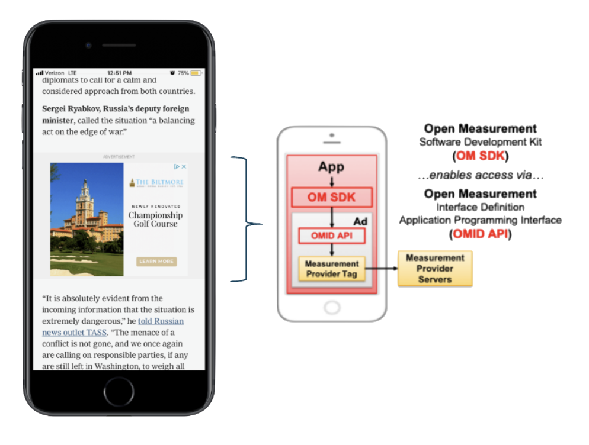

Select Projects

Property Intelligence Platform MVP (2025)
Role: Product Lead
- Problem: Parcel-level data is scattered, outdated, and difficult to analyze — leaving planners and investors flying blind at the very scale where decisions are made.
- Solution: Building an MVP that aggregates and analyzes parcel-scale economic indicators using Python, FastAPI, PostGIS, and GeoPandas.
- Impact: Lays the foundation for parcel-level land-value prediction — enabling planners and investors to spot shifts before they hit traditional datasets.

Role: Product Director
- Problem: Publishers relied on IAS ad-quality measurement to surface performance insights — but the legacy UI made it slow and painful to pull reports or act on the data.
- Solution: Reimagined the platform around the publisher workflow — delivering a faster, more flexible reporting experience purpose-built for sell-side use.
- Impact: Improved operational efficiency, reduced internal dev cost, and laid the groundwork to accelerate innovation in publisher-facing features.

Mobile Ad Measurement (2019)
Role: Product Lead
- Problem: Buyers lacked trust in mobile in-app inventory due to inconsistent, hard-to-measure ad-quality signals across a fragmented mobile ecosystem.
- Solution: Built a product that leveraged Open Measurement SDK signals to independently verify viewability, fraud, and brand safety for buyers.
- Impact: Helped unlock new ad spend by enabling true third-party measurement in previously unverified mobile inventory.

Graph-based Intelligence Application (2018)
Role: Product Manager
- Problem: Analysts were wasting hours piecing together siloed public and private data to map people, places, and relationships.
- Solution: Developed a search-led platform for network analysis with geographic context, integrating ingestion, visualisation, and alerting.
- Impact: Clear signal of product-market fit among mission-critical users - setting the stage for expansion into adjacent markets.

Mobile Situational Intelligence App (2017)
Role: Product Manager
- Problem: Leaders lost situational awareness once away from desktop systems.
- Solution: Developed a mobile alerts app that surfaced early signals from open-source feeds.
- Impact: Equipped US military and corporate-security teams with timely, actionable intelligence in the field.

Predictive Threat Assessments (2011)
Role: Geospatial Analyst
- Problem: Intelligence remained reactive; threats were only addressed once they appeared.
- Solution: Operationalised predictive models (built by data scientists) to generate forward-looking risk assessments.
- Impact: Used by law-enforcement and counter-terrorism teams to anticipate emerging risks.